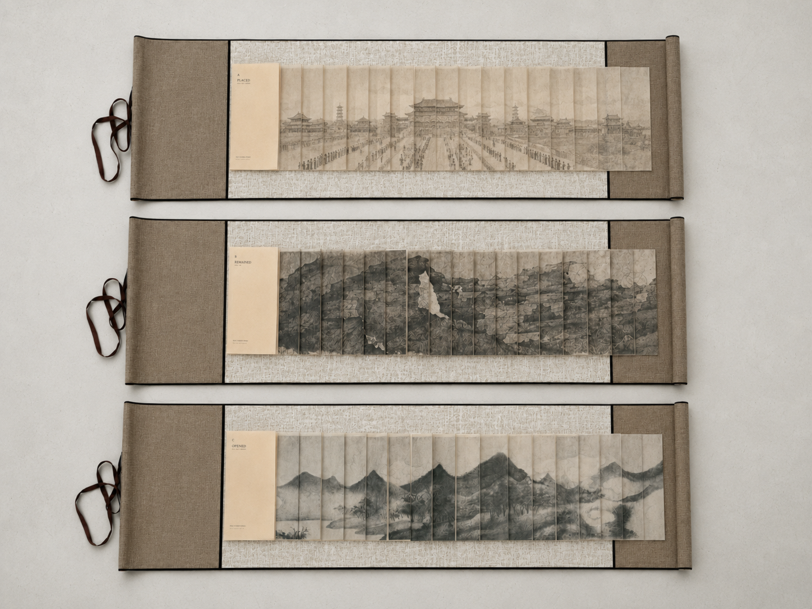
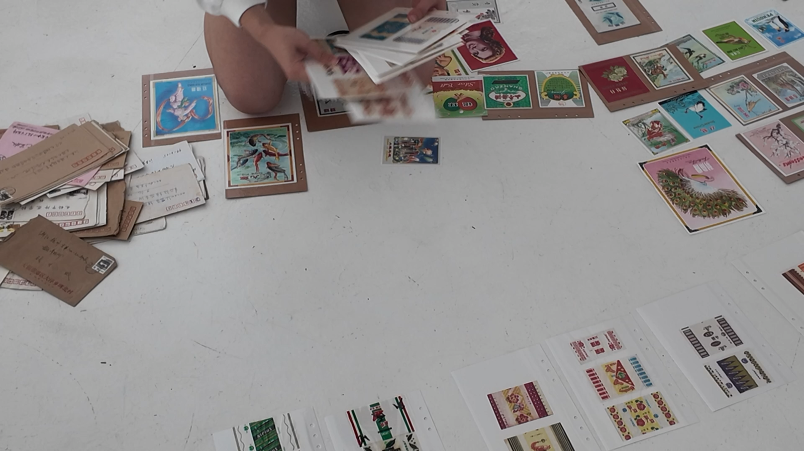
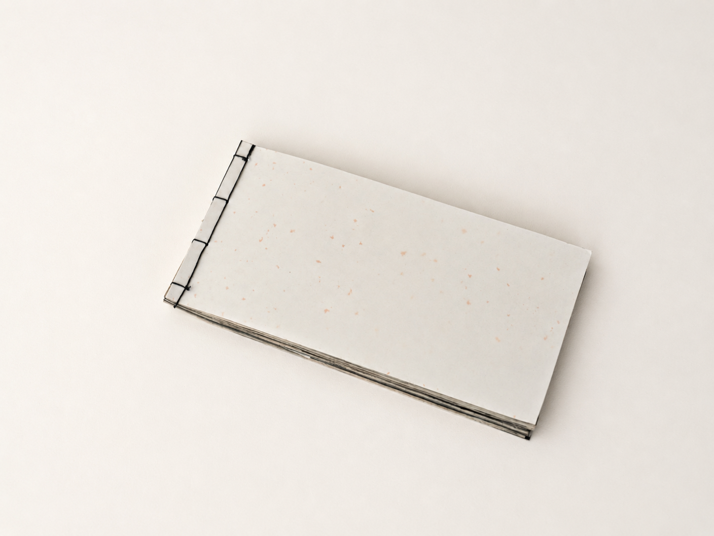

Selected Works
Works
Selected works tracing a practice from artist books and printed matter toward book-based structures, interactive perceptual fields, material archives, and embodied writing.
Section 01
Current Practice
Recent works across book-based structures, interactive perceptual fields, material archives, and embodied writing.

Beijing Orders
Three dragon-scale-bound artist books translating embodied encounters with Beijing’s architectural and historical order into layered material reading.
The Three Metamorphoses / 精神三变
A web-based perceptual field where movement, stillness, and presence accumulate as blur, rupture, density, and fading traces.

The Bureau of Invalidated Tickets / 失效票证管理局
An accumulating study of obsolete tickets as material records of access, allocation, value, and circulation.

皮相 / 笔象 / Skin of Writing
A hand-bound book object gathering the pressure, correction, and residue of writing practice.
Section 02
Earlier Works and Foundations
Earlier artist books, printed matter, and handmade paper objects that continue to inform the practice.

Destroyed a Beautiful Life
A small sequential book on growth, care, and destruction.

Object Poems
Small translucent paper objects exploring reading and handling.

Folded Poem Study
A folded printed study turning poetry into continuous reading.
Drawings in Printed Form / Publications
Two published drawing books shown as early printed image practice.

Travel Journal Series
Layered travel journals using collected fragments and page structures.

Risograph Box
A hand-assembled box opening into layered paper mechanisms.